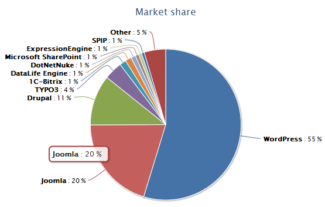

If you want to build a good, mobile friendly and functional website quickly, you’ll need to choose a platform (also known as content management system).
In recent statistics made by W3Techs, WordPress is the most popular content management system (55%) followed by Joomla (20%) and Drupal (11%).
